一块屏幕价值几何？如果它是互动的呢？
如果它不仅能体验还值得拍照发票圈呢？
这是一个关于酷栈科技的业务的介绍，也是一篇酷栈从自己互动体验专业出发作出的行业概览——关于业内互动屏幕类型产品的相关设计的概览。各位尊敬的客户也大可把这个当作互动装置的选型指南:)
我们思考的出发点是前面的几个问题，也涉及到诸多观察 - 互动创意科技的普及和体验式经济的热潮。这篇是第三篇：3)（交互的）沉浸体验空间：沉浸式展厅和沉浸式展览。
尺度依次递增的几类互动屏幕。
之3)（交互的）沉浸体验空间：沉浸式展厅和沉浸式展览。
交互沉浸体验空间。
前几篇我们都会去分类，而在沉浸体验空间这个尺度上，我们着重于定义。交互沉浸体验空间，尤其在有Teamlab这样现象级的产品完美迎合了体验式经济的需求，进而完美验证了这个概念之后，这个名词似乎很熟悉。但虽然大家都提不代表定义得清晰，空间用上了投影就算是沉浸式？我把这个定义拆开成三部分来说：互动--沉浸式体验--空间。
“空间”和“沉浸式”。
先说“空间”和“沉浸式”这一对孪生概念。
前面两篇都是“构件”，要么是空间构件譬如墙和地板，或者更小尺度——空间装饰构件如：镜子、画等等。 而这里“空间”要求整个空间氛围统一地呈现内容，不是一块块背景板作为一个面植入原有空间；这里既需要用更多的面去围合成空间却也不必要将屏幕做到每一块空间构成面上。例如teamLab的这个交互地板项目，一方面互动投影内容只做在了地板上并没有做满六个面；另一方面，他们选择将四周的墙面设计成镜面墙、利用对称和反射这样基本的物理原理（也是生成艺术的常用手法）去“围合”整个空间。
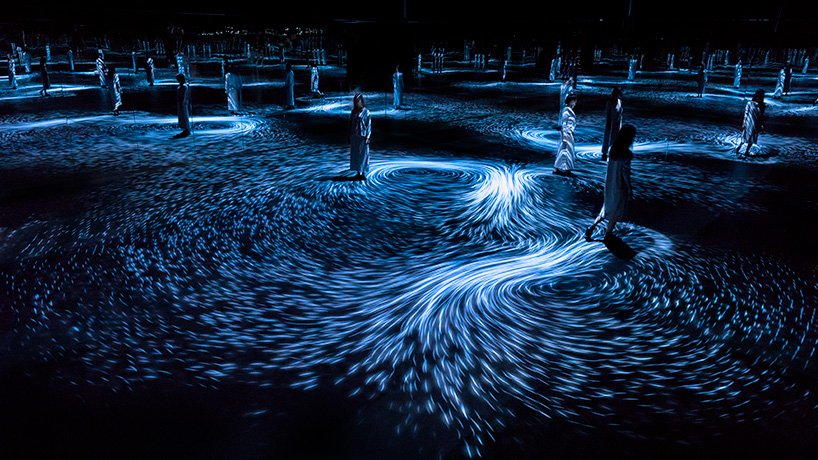Moving Creates Vortices and Vortices Create Movement. 2017. TeamLAB。
如果我们把"使用镜面墙去反射地板上的内容"这样一个设计决策看作是一个物理空间营造技巧，同样地我们可以将更多的物理空间营造手段和“互动地板”、“互动天花板”或者“互动墙”结合呈现空间，例如前面我们提到过的NohLab的展厅设计。整个物理空间的设计和构造仍然根据“传统的”展示需求进行组织，而使用互动投影地板和局部投影天花板构件作为新增的构造空间氛围的手段。
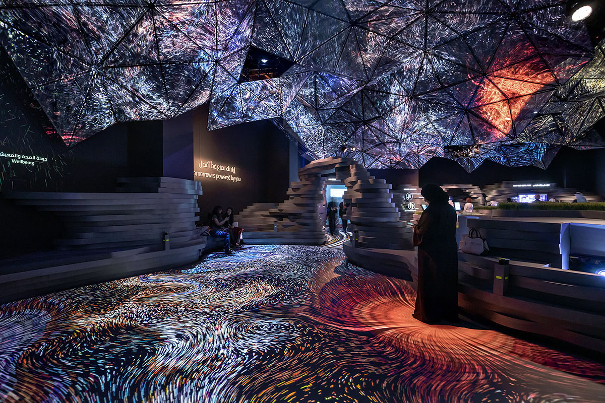Edge of Government ，2019. NOHLAB。
相应地，如果我们把思路调整一下。关于如何使用前面提到的“会动的画”、“交互的镜子”和“互动墙、地板、天花板”这些元素，不再把他们当作一个家具，或者一件像电视机一样的电子设备；而是把它当作一个空间元素，例如至少是一面屏风、一个空间隔断乃至整个空间的围合界定手段。整个空间由这些数字的、互动的内容去界定，从而呈现一个由数字内容加持、甚至是直接构成的空间。
当使用者在空间中被这些内容“包裹”进而“沉浸”其中，也就实现了我们的“沉浸式”体验的构建。从这个维度上说，如果建筑设计以空间设计作为交付并把室内留给室内设计；我们说的“沉浸式体验”设计，就是室内设计（或者是建筑设计直接跳过室内设计）将墙面硬装直接交付给“沉浸体验设计”方。而“沉浸式体验”从内容主题和可能的交互行为设计出发独立或者和建筑设计一起完成“新的”室内设计——沉浸式体验空间设计。而不是将设备交付，找个地方或者空间挂上去。
中国国家地理·营地 @乡伴红叶柿岩理想村 ，2020. 黑弓
这个逻辑，我们用黑弓给中国国家地营地x乡伴红叶柿岩理想村做的科技艺术馆为例进一步解释。这个沉浸式项目由一系列的各种尺度的“屏幕”构成。有小尺寸的一幅幅的静态的“画”，也有会动的“画”；乃至放大到一面隔墙 —— 用屏幕或者投影加上数字互动形成的互动数字墙；或者用镜面反射、或者几面数字墙（包括地板）围合成空间，形成互动数字内容“包裹”使用者的“沉浸式”空间。
如果我们按前面几篇给出的框架对这个项目作出进一步拆解：
一幅幅的静态的“画”，和会动的“画”，多幅“画”的组合；
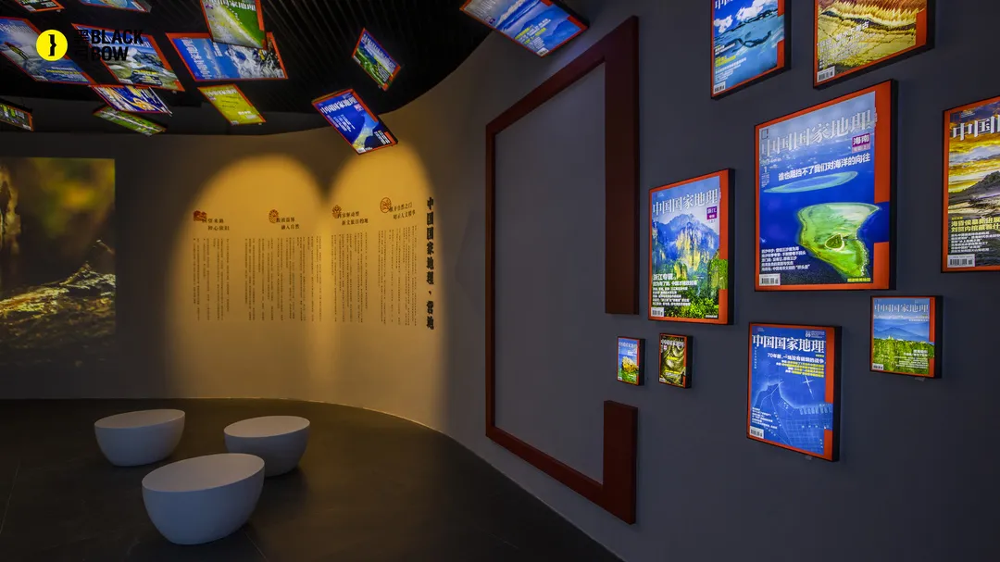 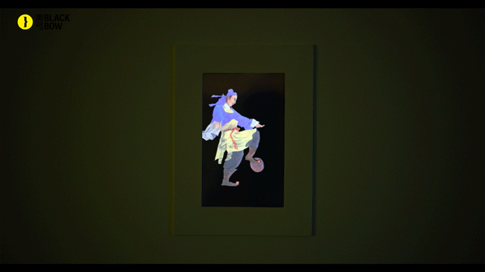
互动的“画”放大到（接近）一面墙尺寸；
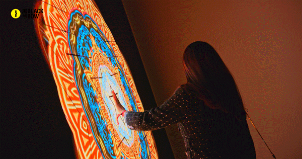投影交互数字墙和屏幕交互数字墙；


用交互数字墙➕“镜面反射”构造的空间；

几面数字墙（包括地板）围合成空间；


交互沉浸体验展览。
然后所有的这些内容，用“时光隧道穿越到齐国”、“讲述霸国历史” ；并“以《齐民要术》的素材、内容去组织故事和主题，并以之引导空间序列的组织。概括来说，用一个叙事逻辑组织空间，或者说按一个展览展示逻辑去设计序列空间，每一个空间都有着自己的主题和体验，进而构成了一个有故事线的沉浸式体验，就像一场展览一样，被策划过的展览内容按照一个主题去展示。
当空间不是孤立的点状而是一个空间序列的时候，一定得有它的组织逻辑比如展览展示的主题。但是这也不一定非得是故纸堆里翻出来的文化意向，当然只要项目需要这可以是很好的、有着强在地性的好主题:）；除此之外，我们也大可以用其他更抽象的主题去组织，比如名画为主题来一个“奇幻漂流记”画展，就把各种尺度的、各种互动形式、各种艺术风格的“互动的画”们，按尺寸或互动、空间形式组织成空间序列。可繁复、可简单，可以只在一个小小的走廊里做一条线，也可以干上1000平的十个展厅组团成群。
互动。
回到黑弓这个案例，其互动内容穿插其间 —— 局部是互动的、其他是直接显示静态或者动态的内容，其中有的内容是数字内容，有的是物理构件。无他，成本的考量。互动加上去，除了数字硬件的成本、还有交互软件的制作成本以及动态内容制作的成本。互动的体验作为整个空间的体验营造不可或缺的一部分，并不会也不必要是全部，合理地使用数字互动的内容、手段和空间营造结合起来即可。回到NOHLab这个只做了一面互动地板和天花板局部构件投影的例子。空间设计和营造还是一个不可或缺的部分。
内容和视觉呈现。
不能因为最后放上了一个案例分析就跑偏了前面提到的一些基础准则。
这些屏幕或者沉浸空间里的视觉内容，酷栈的兴趣和未来的发展都将尽可能紧扣生成这个关键词。具体来讲，把这些数字屏幕上的内容用交互数字艺术创作手段去呈现，而未见得是个做个动画让凤凰从墙上飞下来，如此具象。比如用我较为熟悉的“山水”，一个非常非常传统的文化意向举例，它可以很数字化，很科学...
山可以是一连串sin曲线的叠加；
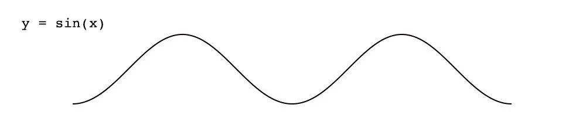 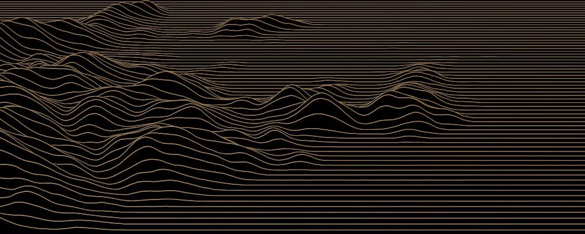也可以是一系列柏林噪声（perlin noise）曲线的叠加；
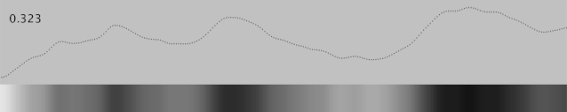 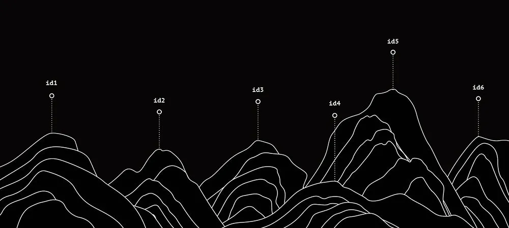 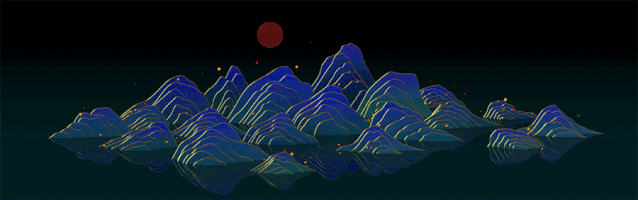或者也可以用perlin noise曲线去做水；
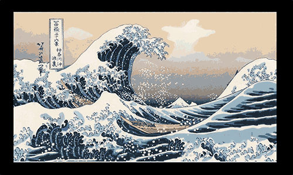再或者，古人这样的一副烟波浩渺的水墨画就是一连串的sin曲线:)
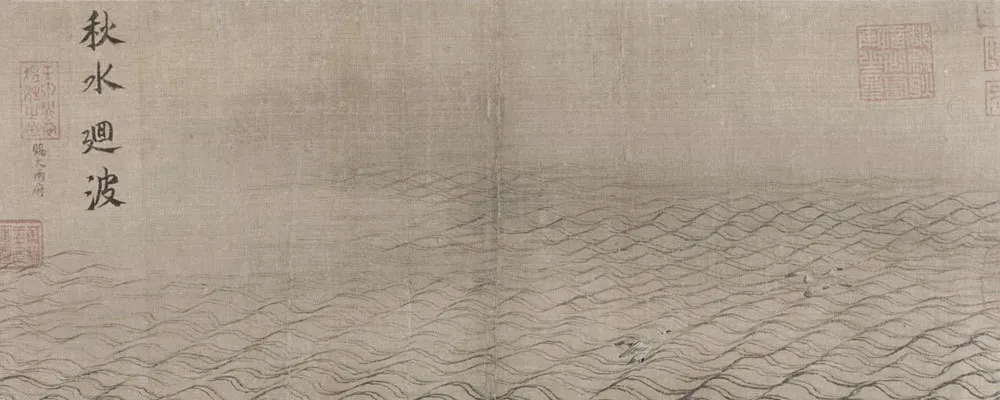如果还记得前面的那个生成视觉的例子，往前推一把变粒子星空？
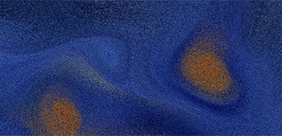总的来讲，我们的视觉内容偏好抽象的生成式视觉。我们永远扛着传统的文化意向在肩头，但是对数字化抽象的视觉形式更加熟悉和偏好。沿用这样更新、更当代和前沿的视觉形式去重新呈现传统意向，是酷栈在视觉风格上希望达成的方向和发展方向。
酷栈的交互沉浸式空间。
回到在这个产品形式上酷栈的基本策略。在沉浸空间类的产品中，酷栈将不断提供、同时也自我积累可复用的产品。一类是按照我归纳的类型 —— 以代码生成视觉为主要内容形式的交互（或者不交互的）地板、背景墙，或者镜子型的交互墙；复用的同时，可以在视觉呈现如颜色、抽象图案元素上做适配性调整，结合着空间营造的前提下可以相对小的投入却收获不错的效果（见Edge of Government，2019案例）。一类是基于人工智能的“会动的画”，由于它底层技术的特性，它提供的更像是一个模版，每个具体设计场地，我们可以匹配不同的名画去二次创作，从制作上是复用但是去交付上都是定制内容。另一类是在我在第二篇的“数据驱动交互视觉”里提到的，酷栈可以提供定制的艺术装置创意+实现。量产货➕专有定制共同呈现沉浸空间。因而，沉浸式空间之于酷栈的业务，部分本质就是个“产品打包销售”的销售模式，一口气卖上一堆“量产”的大大小小屏幕+互动内容；再加上一些定制的“屏幕”的设计和制作。
当然，关于沉浸空间这个形式本身，远超出了“挂设备”或者摆放酷栈提供的互动屏幕装置这个范畴。前面提到和强调过的空间营造、主题组织和展览展示设计都是重要的组成部分。但是没关系，毕竟人工智能和交互媒体艺术之外，我还有一个建筑学的专业学位。空间营造在互动体验设计之外，依然在我的专业内，当然与之对应地，酷栈还要收取展览空间方案设计费。
一块块移动的屏幕 vs. 户外大屏们。
当然这里面还没有涉及到新近很火热的户外大屏幕们，那个的尺度的项目约略不在当前酷栈能力可操作的区间内，而且这类项目大都是非常直接的硬件屏幕堆尺寸加CG制作内容，从业务和创作逻辑上也不在酷栈的业务考量范围内。但是相较于大投入的大屏幕而言，酷栈对于户外内容有另外一个思考 —— “零成本建造(ZERO-Cost Construction)”， AR技术在空间营造里的应用。只有建好数字模型、上传就完成了建设。譬如这个动态装置，如果在场地中“建造”，AR的成本和实际建造的成本和设计自由度不在一个量级上。AR的方式不仅不用考虑地球引力还不用考虑物料、人工等等成本。
AR Project ，2019. Shahab Shafei Studio
当然这里似乎有一个逻辑漏洞，就是AR的虚拟数字内容和实际建造的物理装置的价值被我画上了等号。进一步解释，放到下一篇：移动的一块块屏幕。